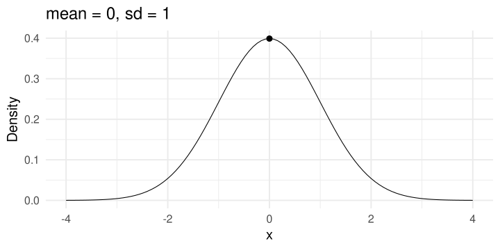
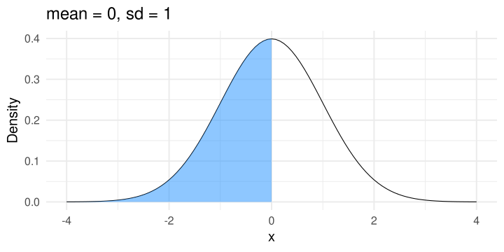
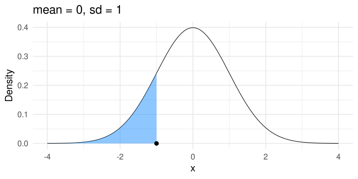
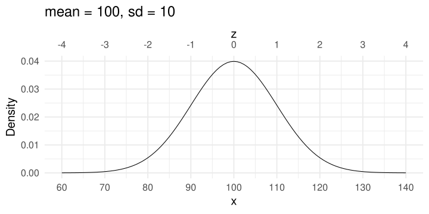

![]()
dnorm(x = 100, mean = 80, sd = 10)[1] 0.005399097dnorm(x = 80, mean = 80, sd = 10)[1] 0.03989423dnorm(x = 1, mean = 80, sd = 10)[1] 1.118796e-15ADCOM 2025-2026
Ultimo aggiornamento: 03-18-2026
La distribuzione Normale o Gaussiana è una delle principali distribuzioni di probabilità. E’ una distribuzione di probabilità continua che dipende da due parametri \(\mu\) e \(\sigma\). La PDF (probability density function) è:
\[ f(x \mid \mu, \sigma^2) = \frac{1}{\sqrt{2\pi{\color{red}{\sigma^2}}}} e^{-\frac{(x-{\color{red}{\mu}})^2}{2{\color{red}{\sigma^2}}}} \]
I valori ammessi sono compresi tra \(-\infty\) e \(\infty\) e sono simmetrici rispetto alla media.
Possiamo calcolare la densità \(f(x)\) dati i valori di \(\mu\) e \(\sigma\). Per \(x = 0\) la densità è circa 4.

Oltre alla densità presentata prima, possiamo calcolare la probabilità cumulata fino al valore \(x\):
\[ \Phi(x) = \frac{1}{\sqrt{2\pi}} \int_{-\infty}^{x} e^{-\frac{t^2}{2}} dt \]
Questo è lo stesso concetto dei percentili e dei ranghi percentili. Questa funzione risponde alla domanda, quanta probabilità c’è di avere un valore \(\leq x\) (o \(> x\)) avendo una Normale con media \(\mu\) e deviazione standard \(\sigma\)?
Probabilità cumulata fino a \(x = 0\) è del 50%.

Ovviamente, esiste anche una funzione che data la probabilità cumulata restituisce il valore di \(x\) associato. \(x = -1\) è il valore che si lascia a sinistra il ~16% di probabilità cumulata.

Tutto questo è possibile, ovviamente, assumendo di conoscere \(\mu\) e \(\sigma\). Sono formule che permettono di calcolare queste quantità (densità, probabilità cumulata e inverso) per normali teoriche.
Con dati empirici i quantili e ranghi percentili svolgono una funzione simile. Più la distribuzione è effettivamente normale, più queste approssimazioni teoriche sono vicine al dato empirico.
In R sono implementate le principali distribuzioni di probabilità, tra cui chiaramente quella Normale.
Inoltre ci sono 4 funzioni per lavorare con le distribuzioni normali:
d + nome della distribuzione ad esempio dnorm: calcola la densità di un certo valore \(x\)p + nome della distribuzione ad esempio pnorm: calcola la probabilità cumulata fino al valore \(x\)q + nome della distribuzione ad esempio qnorm: calcola il valore \(x\) associato ad una certa probabilità cumulatar + nome della distribuzione ad esempio rnorm: genera \(n\) numeri casuali da una distribuzione normale.Ad esempio, calcoliamo la densità di probabilità del valore \(x = 100\) per una normale con \(\mu = 80\) e \(\sigma = 10\):
Ora calcoliamo la probabilità cumulata fino a \(x = 100\) sempre per la stessa distribuzione:
Ora calcoliamo l’inverso:
[1] 80[1] 71.58379[1] 92.81552Ovviamente c’è una corrispondenza diretta tra qnorm e pnorm:
La distribuzione Normale standard è un tipo particolare di distribuzione normale con \(\mu = 0\) e \(\sigma = 1\). La cosa interessante è che tutte le distribuzioni normali possono trasformarsi in normali standard e viceversa.
I valori \(x\) di una normale standard (o punti \(z\)):
\[ z = \frac{x - \mu}{\sigma} \]
Quindi \(\mu\) semplicemente sposta la distribuzione e \(\sigma\) la riscala. Ogni \(x\) può anche essere definito come:
\[ x = \mu + z\sigma \]
Se proviamo a visualizzarla il rapporto tra \(x\) e \(z\) è chiaro:

Quindi un punto \(z = -3\) significa che siamo 3 deviazioni standard sotto la media. Nel caso di \(\mu = 100\) e \(\sigma = 10\) quindi abbiamo che \(z = -3\) significa \(x = 100 - 3 \times 10 = 70\).
Ovviamente, sappiamo anche che dire \(z = -3\) significa sapere che solo il 0.13% ha valori uguali o più piccoli.
Lavorare in punti \(z\) è chiaramente più comodo. Ragioniamo in una nuova unità di misura ovvero la deviazione standard.
Nel caso di dati veri, la normalità può essere assunta ma comunque possiamo calcolare i punti \(z\):
[1] 99.30284 101.00857 106.77626 82.66699 102.99144[1] 98.54922[1] 9.304288[1] 0.08099714 0.26432491 0.88422001 -1.70697979 0.47743772